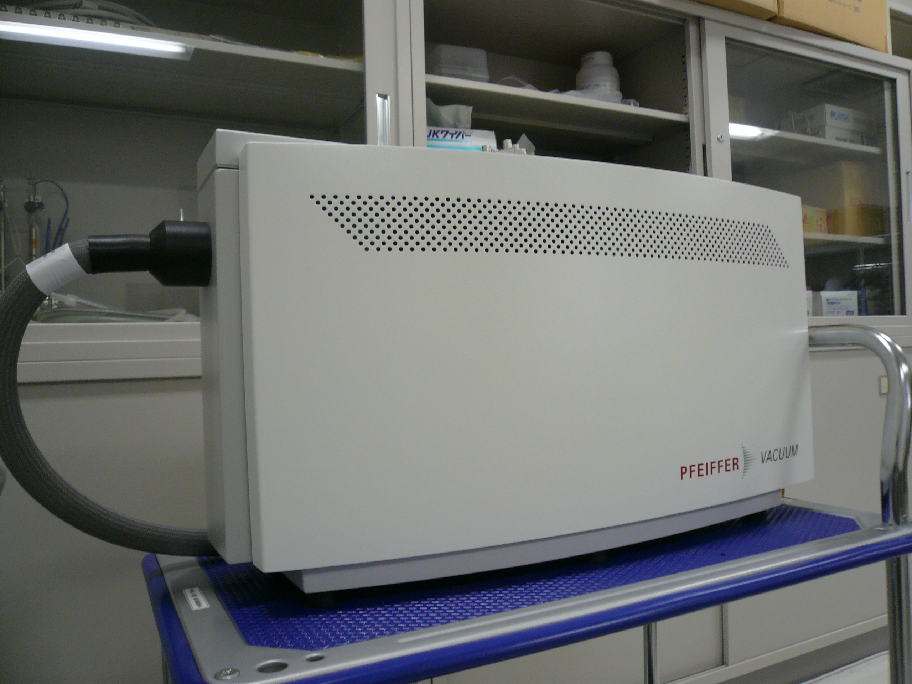

Pfeiffer Vacuum社製 四重極質量分析計（OmniStar GSD301 O1）
| 測定質量数 | 1～300amu |
| 公称検出限界 | ＜1ppm※ |
| フィラメント材質 | イットリアコートイリジウム |
| 検出器 | ファラデーカップ＋チャンネルトロン増倍管 |
| ガス導入部 | ステンレスキャピラリー |
| キャピラリー寸法 | 外径=1/16インチ、内径=0.125mm |
| キャピラリー長さ | 1m |
| ガス導入量 | 1～2sccm |
| ガス導入圧力 | 500～1500hPa |
| ガス導入部最大加熱温度 | 200℃ |
| 排気部 | PTFEチューブ（外径=6mm） |
| 測定スピード | アナログスキャン：200msec～60sec/amu バーグラフスキャン：20msec～60sec/amu トレンド：10msec～60sec/ch |
| 測定チャンネル | 64チャンネル |
| 接続 | 1/8" Swagelok |
※ 残留成分により制限される場合があります。